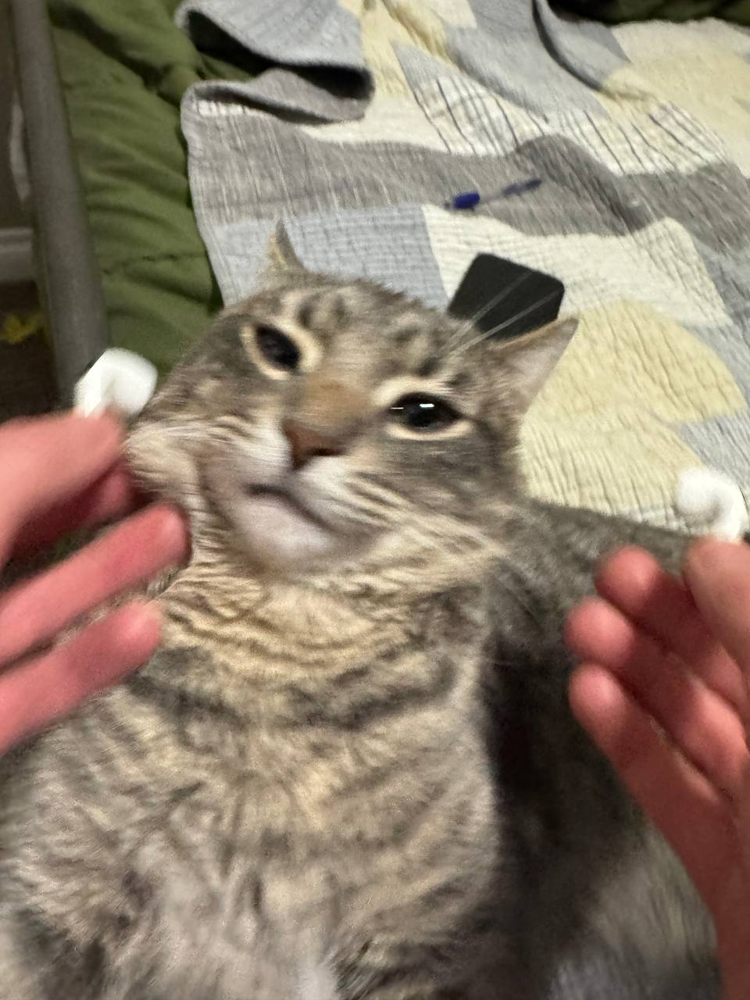

Вітаю на моєму сайті
Мене звати Іван Мусієнко. Це мій персональний сайт-портфоліо, створений у межах лабораторної роботи з HTML.
Я цікавлюся frontend-розробкою, програмуванням та сучасними веб-технологіями. Моя мета — навчитися створювати зручні, зрозумілі та корисні веб-сайти.
"Кожен великий результат починається з першого кроку."
Мої основні цілі
- Покращити знання HTML.
- Вивчити CSS для оформлення сторінок.
- Опанувати JavaScript.
- Створити власне портфоліо frontend-розробника.
- Навчитися правильно використовувати семантичні HTML-теги.
Моє фото або аватар
